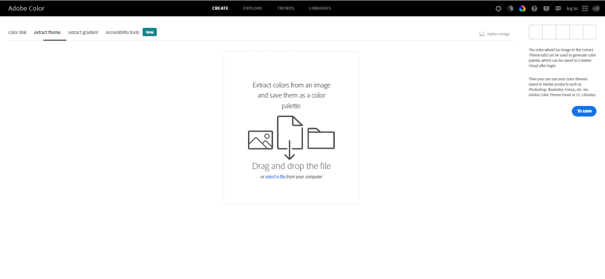
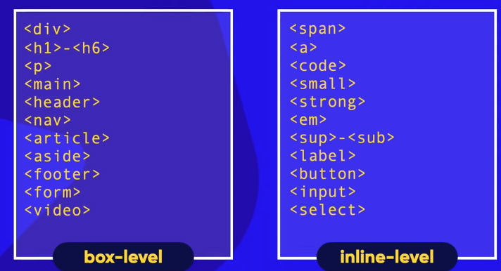
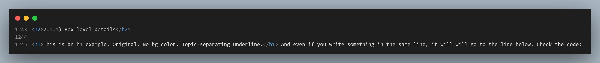

1) COLORS
a) The basic about colors in the web
In the Web colors are displayed in the monitors combining RED, GREEN, and BLUE light. That's where the name RGB (colors) come from.
sRGB is a standard RGB (red, green, blue) color space that HP and Microsoft created cooperatively in 1996 to use on monitors, printers, and the World Wide Web.[2] It was subsequently standardized by the International Electrotechnical Commission (IEC) as IEC 61966-2-1:1999.[1] sRGB is the current defined standard colorspace for the web, and it is usually the assumed colorspace for images that are neither tagged for a colorspace nor have an embedded color profile.
Wikipedia RGB
So RGB is the standard but you can talk about RGB colors with your computer in other languages
. In other words, you can set CSS colors either naming ther by their Red, Green and Blue values or by any other numeric patterns your computer can understand as colors in a CSS selector (hexadecimal, for instance, is very used).
But colors may attend by their names too.
All modern browsers support the following 140 color names: Please, it's better to check them at w3schools.
If you want to go deeper in the RGB universe, like:

Then you can read all the Wikipedia article mentioned above.
But if you've had enough for while, you may stick to those ONE MILLION colors you can use with this lesson and see all of them at once right here:

Picture from wikipedia
b) The basic about colors in CSS
As we saw in the CSS Intro page, all the 3 ways of implementing CSS into your page are somehow preceded by the word "style" or "stylesheet".
So, when you're in a "style" environment, which means a CSS environment, the most common forms of applying colors is through both "color" (changes the color of the text) and "background-color" (the name says it all) properties of the CSS declaration. Let's check how it fits in the 3 ways of CSS:
Internal CSS:

Inline CSS:

External CSS:
This is the HTML SIDE of the external CSS (a link mentioning stylesheet
that leads to a separate .css
extention file):

And this is the CSS SIDE of the external CSS:

1.1) Color palette
In color theory, a color scheme (or palette) is the choice of colors used in various artistic and design contexts. For example, the "Achromatic" use of a white background with black text is an example of a basic and commonly default color scheme in web design. Color schemes are used to create style and appeal. Colors that create an aesthetic feeling when used together will commonly accompany each other in color schemes. (Wikipedia - Color_scheme)
You may not realize but every graphic design you see, be it a website or an advertising and even a movie, has its color palette. And it is used to make you feel something. We'll see the psychological effect of colors later in the course. But if you are curous about it, just check this article by Nicole Martins Ferreira: "How color meanings affect your brand".
To build your own color pallete you may first go to Adobe Colors. The color wheel (or image in the Extract Theme tab) can be used to generate a color palette, which appear below the wheel.
On the left side of the page you can choose among ten color harmony rules.
At any time you can move the small balls in the color wheel to choose your own hue and saturation for each color rule.
Under each color rectangle below the color wheel is its hexadecimal code, which an be copied and pasted directly on your css code.

1.2) Picking a color from screen
To pick a color or a theme you like from any image you have in your device just open the same Adobe Colors as above linked and choose the "Extract Theme" tab. The screen will be the following:

Once you get there, put an image file into the center rectangle, as directed.
If your target image is a website, just make a "print screen" from that page and submit the image as directed.
See the test I made with a watercolor by my friend José Guyer Salles:

Again:
At any time you can move the small balls in the color wheel to choose the colors you want to pick, if different from what was automatically done.
Under each color rectangle below the color wheel is its hexadecimal code, which an be copied and pasted directly on your css code.
1.3) Making a CSS gradient
First let's make a 500 pixels high div
we can work with background colors inside.
A word about the div
First: neither div
nor span
are semantic. Avoid them.
So, instead of making a div
I'll make an article
If the width is not set, the browsers assume that it's 100% wide (margins left and right = zero).
If a width is set, a margin: auto;
CSS centralizes it. Check a real example and its code below:

The article class is called gradient
and displays a bonus violet box-shadow
This is a radial gradient from white to blue. There are other forms to do it, like linear in several directions (including directions in degrees, like "45deg" - positive or negative - for instance), repeating linear and repeating radial. VS Code's Emmet gives you almost all those options when you start writing background-image
in the CSS area/file.
To each color of the gradient a percentage can be attributed right after its name (or value) so it accupies more space or less space in the gradient.
And again Adobe Colors can help you extracting & creating a gradient from any image you like.
1.4) Color Psychology in Web Design
Color psychology is a sub-field of behavioral psychology that studies how colors affect human behavior. It focuses on the emotions, attitudes, and values associated with colors. Let's look at some of those colors and human behaviors most closely associated with them.
Many of us may not realize it, but the colors as used on anyone website are also meant to elicit certain reactions, emotions, and attitudes from the people who visit them. At least that's what color psychology is telling us.
You can read this and much more at medium.com > Bloominari Marketing

End of the colors <article class>
2) Typography
Typography is the art and technique of arranging type to make written language readable and appealing when displayed. The arrangement of type involves selecting typefaces, point sizes, line lengths, line-spacing (leading), and letter-spacing (tracking), as well as adjusting the space between pairs of letters (kerning). The term typography is also applied to the style, arrangement, and appearance of the letters, numbers, and symbols created by the process.
The above quotation from wikipedia gives us a hint that, as well as colors, typefaces can cause some level of emotios, feelings, to the reader. And continuing with Wikipedia:
Typography has long been a vital part of promotional material and advertising. Designers often use typefaces to set a theme and mood in an advertisement (for example, using bold, large text to convey a particular message to the reader).[49] Choice of typeface is often used to draw attention to a particular advertisement, combined with efficient use of color, shapes, and images. Today, typography in advertising often reflects a company's brand.
A brand may use typography to express its theme, personality, and message. Just by looking at the typeface, viewers can get an idea about the message and personality of the brand, which the brands are fully aware of and are tapping into the power of good typography.
Typefaces used in advertisements convey different messages to the reader: classical ones are for a strong personality, while more modern ones may convey clean, neutral look. Bold typefaces are used for making statements and attracting attention. In any design, a balance has to be achieved between the visual impact and communication aspects. Digital technology in the twentieth and twenty-first centuries has enabled the creation of typefaces for advertising that are more experimental than traditional typefaces.
Please, read id directly from Wikipedia:
2.1) How to choose fonts in css
As you must have noticed in your previous experience with text softwares, a kind of letter is called font
. In fact it's been called font since 1995, according to the Wikipedia article above.
This paragraph is written in a different font family as the rest of the page. And it is applied with inline CSS as follows:
As all the other CSS style effects, you may choose to apply it by inline or internal or external CSS
Note that when the font family name is composed of more than one word, it must be between quotes,like the "Arial Narrow Bold" in the above code snippet.
There are always 3 types of font in each Emmet suggestion. It's called a
safe combination
that provides options to a certain device (mobile, tablet, Smart TV, PC, you name it) in case it doesn't have one of the chosen. In that case, a very similar one will be used.
If you don't mind which particular font will be used, you may always choose serif
or sans-serif
as a font family and there will be no mistake. Every device must have at least one of each kind to display.
2.2) Font sizes
2.2.1) Absolute mesurements:
- cm (centimeter) can have different displays depending on the size of the device.
- mm (milimeter) can have different displays depending on the size of the device.
- in (inch) can have different displays depending on the size of the device.
- px (pixel) can have different displays in Apple retina monitors.
- pt (point) A
printed in paper
measurement.
- pc (paica) A
printed in paper
measurement.
2.2.1) Relative mesurements:
- em (in proportion to the capital letter hight of the font size).
- ex (in proportion to the "x"" hight of the font size).
- rem (in proportion to the root [top parent's] font size).
- vw (in proportion to the viewport [the screen] width of your device).
- vh (in proportion to the viewport [the screen] hight of your device)
- % (in proportion to the parent element)
CSS different units for expressing length according to www.w3.org:
You may also check it from MDN Web Docs:
MDN web docs about font size.
Or even according to w3schools:
w3schools about css font size.
2.2.2) Font weight
A bolder font style.
A lighter font weight.
And so on. You can choose. See Emmet's options:

From 100 to 900 are values that range from the equivalent to lighter (100) to bolder (900).
2.2.3) Other styles
Of course all the styles you already apply in MS Word are available here, like italic (made with the <em> tag) and bold (made with the <srtong> tag).
Underline is made with text-decoration: underline;
simple declaration in the internal and external CSS.
But to make it inline, there must be a <span> tag, like here.
But the above works better in one word or a few words. To make it in block (like all the paragraphs, all the h1 titles, the whole page, a group of paragraphs or one paragraph) its better to make it CSS internal or external, like this:

To make a shorthand (to use 1 line instead of 4) of the above just declare font: and put the properties in the following order:
style weight size family
Like that:
font: italic bolder 2em 'Courrier New'
Note: you don't have to declare all the 4 properties, but you must mantain the same order, even skipping some of them.
Don't forget the order:
- Style
- Weight
- Size
- Family
2.2.4) Font family options
At fonts.google.com you have a lot of font options to use (more than 1,300!!!). Once you choose a font, you can download, embed or import the font. The last option is the most practical. Just copy the given code and insert it into the first lines of the CSS space (outside any selectors) of your website or page to be used where you want, as if it was installed in your device. You must be connected to the web, though. You can do it with as many fonts as you like in the same website's CSS space/file.
As the teacher says, there are other websites that do the same but he likes Google Fonts. And, of course, it's free to use.
Remember always to declare, at the end of the font family line, the general type, I mean, serif or sans-serif, just in case anything else works for any reason.
2.2.5) The @font-face Rule (CSS) and the font-family property (HTML)
With CSS, websites can finally use fonts other than the pre selected "web-safe" fonts.
a) To use a new font in the CSS area: After you download a font to your website folder (a folder of your choice), just declare the font name (suppose it's "Open Sans") and the URL where it can be found (remember it's already in a folder of your choice and suppose it's called fonts
):
@font-face {
font-family: "Open Sans";
src: url("/fonts/OpenSans-Regular-webfont.woff2") format("woff2"),
url("/fonts/OpenSans-Regular-webfont.woff") format("woff");
}
It's part of the syntax to declare the format after the url, like above. The file type is repeated inside the parenthesis: format("woff2")
. It's better to check if the format really equals the file type.
b) To use the font for an HTML element: refer to the name of the font (myFirstFont) through the font-family property:
div {
font-family: myFirstFont;
}
Note: With Fonts Ninja
extention, obtained at Chrome Web Store, you can discover what kind of font is that you liked in someone else's web page.
And at whatfontis.com you can discover what kind of fonts are used in any illustration, any picture.
See more details at developer.mozilla.org
3) Text Alignment
3.1) Text-align
The text-align CSS property sets the horizontal alignment of the content inside a block element or table-cell box. This means it works like vertical-align but in the horizontal direction.
Syntax:
start:
The same as left if direction is left-to-right and right if direction is right-to-left.
end:
The same as right if direction is left-to-right and left if direction is right-to-left.
left:
The inline contents are aligned to the left edge of the line box.
right:
The inline contents are aligned to the right edge of the line box.
center:
The inline contents are centered within the line box.
justify:
The inline contents are justified. Text should be spaced to line up its left and right edges to the left and right edges of the line box, except for the last line.
justify-all :
Same as justify, but also forces the last line to be justified.
match-parent:
Similar to inherit, but the values start and end are calculated according to the parent's direction and are replaced by the appropriate left or right value.
<string>:
When applied to a table cell, specifies the alignment character around which the cell's contents will align.
3.2) Indent
The text-indent property can be used in paragraph tag/selectors to make a (let's say) 30px space before the first line begins.
3.3) Accessibility concerns
The inconsistent spacing between words created by justified text can be problematic for people with cognitive concerns such as Dyslexia.
See more details at MDN Web Docs
4) id, class and div
id and class are perzonalizable selectors. Let's see the differences among them.
4.1) id
Sometimes I may want one of the many <h1> in the website to have a different - let's say - font color as I had declared for all the <h1> in the .css file.
To do that I identify the <h1> with an id
selector.
The id of an element is unique within a page, so the id selector is used to select one unique element (one and only one!), i.e. an <h1> tag.
Clarifying1: English
The Difference Between i.e.
(used above) and e.g.
Check the code. Here I'm using:
- <article> (one inside the other)
- class (One inside the other too. More about CLASS in 4.2 below)
- HTML <blockquote>
- CSS box-shadow (one inside the other)
I.e. is an abbreviation for the phrase id est, which means that is.
I.e. is used to restate something said previously in order to clarify its meaning.
E.g. is short for exempli gratia, which means for example
.
E.g. is used before an item or list of items that serve as examples for the previous statement.
www.merriam-webster.com
To this <h1>
I attributed an id called different
.
It must be used only here.
First I did it in the HTML file. As all the attributes, you put it in the opening tag. Look:
Note below that the id selector at the CSS file is a # (hashtag).
In the first example below the teacher wanted to specify that the id style is directed only to that <h1> tag so he wrote h1#different
in the CSS file. As the teacher himself said later in the lesson, you don't have to do this. And I dare to add: It's COMPLETELY USELESS AND CONFUSING because each id attribute belongs to one place only. Period. You don't have to over specify.
In the .css file it looks like that:
The second example the different
id will be valid for that tag to which it was attributed and that's enough.
Clarifying2:
Never use the same id
for two (or more) things
,
although it will work!. But it would be wrong.
So wrong that I don't know why they allow it to work. Looks like a prank (pegadinha, in portuguese), agree?
4.1.1) id in local navbar
As id defines an unique item it is used also for pointing the local page's navbar to that item.
a) One HTML id for each navbar item, like in these pictures below.
I've created an <article> for each topic's text area (my choice) and assigned an unique id
for each topic (as it must be). The marking of the "colors" topic looks as follows:
The marking of the "typography" topic (the same article
sequence as above):
b) The navbar's styling (in the CSS file):
Note that there's no # or dot selectors here because HTML elements (like h1, p, ul, etc...) don't need any of those.
C) The navbar assembling, in the HTML file:
Check this page's HTML and CSS navbar codes, please. And the navbar itself at the top of the page, of course.
4.2) class
The HTML class is an attribute for some tag.
The class global attribute is a space-separated list of the case-sensitive classes of the element. Classes allow CSS and Javascript to select and access specific elements via the class selectors or functions like the DOM* method:
document.getElementsByClassName.
* The Document Object Model (DOM) is the data representation of the objects that comprise the structure and content of a document on the web.
Read more at MDN Web Docs
Though the specification doesn't put requirements on the name of classes, web developers are encouraged to use names that describe the semantic purpose of the element, rather than the presentation of the element. For example, clarify-box
(to the box below) to describe an attribute rather than only "box", although this class may be presented by a box. Semantic names remain logical (the clarification part of it) even if the presentation of the page changes (if one day it's not a box any longer).
See how class looks in HTML:
Class is identified in CSS by the . (dot) selector before the class name without space. And after the name, a space and open curly braces (VS Code's Emmet closes it for you):
4.2.1) Multiple classes per element???
Yes, it's possible. But how many?
According to Kilian Valkhof, I expected to find a number of 32 or something near that. Turns out I was quite mistaken, the real number, in all browsers, is well over 2000 classes!
Example of a code with 2 classes, from Stackoverflow. Note that there's only a space between each class, in the HTML code.
The CSS is like that:
.class1 {
color:red;
}
.class2 {
background-color:blue;
}
And the HTML is:
<div class="class1">text 1</div>
<div class="class2">text 2</div>
<div class="class1 class2">text 3</div>
But... Is it good practice? According to the same Stackoverflow link as above:
It is a good practice since an element can be a part of different groups, and you may want specific elements to be a part of more than one group. The element can hold an infinite number of classes in HTML5.
Another dev thereof adds: It's a good practice if you need them. It's also a good practice is they make sense, so future coders can understand what you're doing.
But generally, no it's not a good practice to attach 10 class names to an object because most likely whatever you're using them for, you could accomplish the same thing with far fewer classes. Probably just 1 or 2.
4.3) div
<div> is the content division HTML element. It is the generic container for flow content. It has no effect on the content or layout until styled in some way using CSS (e.g. styling is directly applied to it, or some kind of layout model like Flexbox is applied to its parent element).
As a "pure" container, the <div> element does not inherently represent anything. Instead, it's used to group content so it can be easily styled using the class or id attributes, marking a section of a document as being written in a different language (using the lang attribute), and so on.
5) Pseudo-classes
A pseudo-class is used to define a special state of an element.
For example, it can be used to:
- Style an element when a user mouses over it
- Style visited and unvisited links differently
- Style an element when it gets focus
The teacher created 3 divs to show us how pseudo-classes work. Please, pass the mouse pointer over each one.
I put the three of them in a div+class "alignment" to do some tests. It bounces a lot when hoovered. I will certainly learn how to keep them quiet, very soon.
This is div B
This is div C
Check the code below. It only works in "div A" because it's the only one with an id called "d1" and a paragrgaph tag inside:

Pseudo-classes let you apply a style to an element in relation to:
- The content of the document tree;
- External factors like the history of the navigator (:visited, for example);
- The status of its content (like :checked on certain form elements);
- The position of the mouse (like :hover, which lets you know if the mouse is over an element or not).
This is from MDN Web Docs.
Let's see an example that applies pseudo-class style in relation to two things: history and position of the mouse:
This line and all the links in the page are to be modified by pseudo-classes, as explained below:
Clarifying3: How to use pseudo-class links in CSS
a:hover MUST come after a:link and a:visited in the CSS definition in order to be effective.
a:active MUST come after a:hover in the CSS definition in order to be effective.
So the order is:
- link - If nothing is done, it lies there in RED.
- visited - After clicked it turns PURPLE.
- hover - When the mouse is over it gets DARK-ORANGE.
- active - While being clicked it becomes BLACK.
Check the code of pseudo-class links in CSS:

See many more examples of pseudo-classes at w3schools.
6) Pseudo-elements
A CSS pseudo-element is a keyword added to a selector that lets you style a specific part of the selected element(s).
You can insert content before, or after, the content of an element.
Or you can style the first letter, or line, of an element.
For example, ::first-line can be used to change the font of the first line of a paragraph:
The ::first-line pseudo-element can only be applied to block-level elements.
/* The first line of every <p> element. */
p::first-line {
color: blue;
text-transform: uppercase;
}
The pseudo-element syntax is:
selector::pseudo-element {
property: value;
}
You can use only one pseudo-element in a selector. It must appear after the simple selectors in the statement.
Clarifying4: The double colon notation
::first-line versus :first-line
As a rule, double colons (::) should be used instead of a single colon (:). This distinguishes pseudo-classes from pseudo-elements. However, since this distinction was not present in older versions of the W3C spec, most browsers support both syntaxes for the original pseudo-elements.
Check
MDN Web Docs
for details.
w3schools can be of great help too!
All the above was taken from the documentation.
The Curso em Video's lesson about pseudo-elements starts here:
Generating or creating content with CSS is possible by declaring the content property in one of the following pseudo-elements:("Maujor - The CSS Dinosaur")
Check the example of ::after appyed to the pseu-el-paragraph
class in the CSS code:
Personalizing links:
I created a class inside these paragraphs so only them are affected by the pseudo-element.
Ricardo Becheli's Github repo.
His Javascript stand by lesson page.
His Rocketseat introductory lessons page.
The green text was not part of the HTML file. It was inserted there by the pseudo-element ::after.
Check the HTML code:
Pseudo-elements work with id
and class
.
Selectors' notation symbols in these lessons:
- # = id
- . = class
- : = pseudo-class
- :: = pseudo-element
- > = child (or children)
7) Box Model Intro
All HTML elements can be considered as boxes. Every HTML element "makes" a box around its content, even if the box is invisible, like the invisible dashed one displayed around the text below:
Image from: Curso em Vídeo - YouTube.
Boxes are 2D objects. That means they are measured in width x height.
Allright, the dashed border above is invisible but it could be visible if you give it the correct CSS attribute, like the example below:
Image from: Curso em Vídeo - YouTube.
Note that the above border has no padding settings. That means the padding is zero.
Noe let's see a border with a small padding (the gray area):
Image from: Curso em Vídeo - YouTube.
Below we see the text already with a padding space. But another space can be created outside the box so that the next object outsise don't get so close as to touch our box. This outside space is the margin :
Image from: Curso em Vídeo - YouTube.
This box-model-intro
<article>'s class has:
- a blue border
- a 2em padding
- a 2em margin
- a yellow outline
The outline is out of the element. The border is inside the element.
Here is the lesson's outline example:
Image from: Curso em Vídeo - YouTube.
7.1) Types of boxes
- Box-Level
- Automatically goes to the next line.
- Width 100% Viewport.
- Other objects go to next line.
- Examples:
- div
- h1 - h6
- p
- main
- header
- nav
- article
- aside
- footer
- form
- video
- Inline-Level
- Automatically keeps the same line.
- Width: "to fit".
- Other objects keep the same line too.
- Examples:
- span
- a
- code
- small
- strong
- em
- sup
- sub
- small
- label
- button
- input
- select
- img
Examples of each type of box:

Images from: Curso em Vídeo - YouTube.
7.1.1) Box-level details
This is an h1 example. Original. No background color.
And even if you write something in the same line, it will will go to the line below. Check the code:

a) Styling the box-level element (check the whole progression code after "a.3" below)
a.1) Modifying the background-color:
The background-color makes visible the box occupied by this <h1> element.
a.2) Modifying the size:
This is an h1 with a given background color and size.
a.3) Modifying the position (by margin):
The same w/ bkgr color, size and 10% left margin. Check the code below:
The HTML code:
The CSS code:
7.2) Viewing the CSS structure in Google Chrome's Dev Tools
If you press F12
in Google Chrome, a screen like this should open side by side with the web page you are visiting:
I highlighted the a.3
topic's h1 example and information about it is displayed in the Dev Tools area. Note the top menu that the "elements" tab is selected.
Let's check some detais in the picture below, about Dev Tools:
Highlighted in red are:
- The "elements" tab is selected.
- When you click/select an HTML element it gets a grey background and...
- Their CSS styles are displayed in the right column area.
- If "user agent stylesheet" is written somewhere in the style area it means that some defaut style values are given by the browser itself automatically, so I've seen instructor developers in YouTube attributing "zero" values for the "invisible" properties before start styling any object in CSS.
7.2.1) Changing values in Dev Tools
By clicking in the values displayed in the style section of Dev Tools a small box will open and you can change its value.
The amazing thing is that if you are viewing your page in a live server or alike you will see the style changing in real time and, most important, without modifying the code.
It's a test and when you find that the tested value displays in a satisfying way, you go to the code and apply the value.
In the picture below you see the <h2> element RGB color changed to (350, 50, 50) and it displays a dark orange font color for all <h2> in the page (not only this one, as I checked).
At the same time the original color values remain intact in the code. Look:
Allow me to repeat: If you find that the tested value displays in a satisfying way, you go to the code and apply the value.
The same is valid for box sizes. It is amazing to see the box size changing in real time until you find it's ok.
Now the Elilia Romagna  F1 Sprint Race is about to start in Imola . I'll be right back.
F1 Sprint Race is about to start in Imola . I'll be right back.
 source: https://maxf1.net/en/2022-f1-schedule/emilia-romagna-gp-imola/
source: https://maxf1.net/en/2022-f1-schedule/emilia-romagna-gp-imola/
Peccato! Oggi la Ferrari ha perso il primo posto.